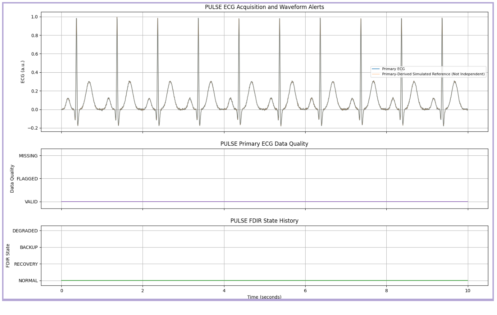

Integration Considerations
Electrical interfaces, sampling coordination, power distribution, and independent subsystem operation.
Investigating biomedical signal integrity and autonomous fault management in rocket flight.
PULSE-enabled Research in Instrumentation and Signal Monitoring
Predictive Uncertainty and Loss-of-Signal Evaluation
Payload Co-Lead
Student Rocket
In Development
PRISM uses a synthetic ECG reference and physical phantom to investigate signal integrity during rocket flight. PULSE evaluates signal abnormalities and supports autonomous fault response using onboard measurements.
INDIVIDUAL ENGINEERING CONTRIBUTIONS
As Payload Co-Lead for Space City Rocketry, I am responsible for leading the technical development of PULSE, the autonomous fault-detection, isolation, and recovery (FDIR) subsystem integrated into PRISM. My responsibilities encompass PULSE system architecture, software development, fault-management algorithms, hardware interfaces, and verification planning.
Designing PULSE's autonomous processing architecture and subsystem interfaces.
Developing fault detection, classification, confidence evaluation, and recovery logic.
Building Python prototypes and evaluating fault-management behavior using simulated ECG signal faults.
Defining interfaces between the onboard controller, ECG acquisition, environmental sensors, and local data logging.
AUTONOMOUS SYSTEM DESIGN
PULSE is being developed as a self-contained, environment-aware fault detection, isolation, and recovery system. Its architecture combines continuous ECG acquisition, environmental measurements, onboard processing, autonomous fault response, and local data logging.
ADS1292R dual-channel measurements
Acceleration and temperature sensing
Teensy 4.1 and autonomous FDIR logic
Fault actions and local MicroSD records
ECG and environmental measurements provide inputs to PULSE processing. Fault decisions and supporting data are recorded locally for postflight analysis.
AUTONOMOUS FAULT MANAGEMENT
I am developing PULSE's autonomous Fault Detection, Isolation, and Recovery (FDIR) algorithms using Python-based prototypes. The system is designed to identify ECG signal abnormalities, evaluate fault classification confidence, and support onboard response decisions.

Establishing normal ECG behavior and evaluating false alerts under healthy signal conditions.
Generate healthy synthetic ECG data to establish baseline behavior.
Introduce controlled abnormalities into reference signals.
Evaluate fault detection and classification behavior.
Review results and improve fault-management logic.
EMBEDDED SYSTEM DEVELOPMENT
PULSE's planned hardware architecture combines onboard processing, continuous ECG acquisition, environmental sensing, and independent data logging to support autonomous fault management.
| Component | Subsystem | Engineering Function |
|---|---|---|
| Teensy 4.1 | Processing | FDIR execution, acquisition coordination, and logging |
| ADS1292R | ECG Acquisition | Continuous dual-channel ECG measurement |
| ADXL375 | Environmental Sensing | High-g acceleration measurements |
| DS18B20 | Environmental Sensing | Temperature monitoring |
| MicroSD | Data Storage | Independent onboard data recording |
| Power Regulation | Electrical | Regulated power supply for onboard electronics |
Electrical interfaces, sampling coordination, power distribution, and independent subsystem operation.
Signal acquisition, sensor synchronization, logging reliability, and autonomous fault-response testing.
DEVELOPMENT ROADMAP
PULSE is progressing through an iterative engineering development process, from preliminary system design and Python prototyping toward embedded integration, ground verification, and flight evaluation.
Current focus: Python FDIR refinement and preparation for embedded hardware integration.
Defined the preliminary PULSE architecture, fault scenarios, and subsystem interfaces.
Developed initial Python fault-detection prototypes using controlled synthetic ECG signal scenarios.
Integrate onboard processing, ECG acquisition, environmental sensors, and independent logging.
Evaluate signal acquisition, fault response, logging reliability, and integrated system behavior.
Collect flight data and compare onboard PULSE performance against ground-test results.
ENGINEERING DOCUMENTATION
Technical presentations, design reviews, and verification documentation throughout the PRISM/PULSE development lifecycle.
November 2026 | Space City Rocketry
Preliminary payload system architecture, autonomous FDIR development, experimental methodology, and verification planning.
Presented by the Space City Rocketry Payload Leads, Rachel Wade and Ashley Guajardo.
Additional engineering deliverables will be documented as the project progresses.
BEHIND THE ENGINEERING